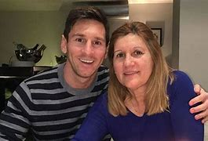
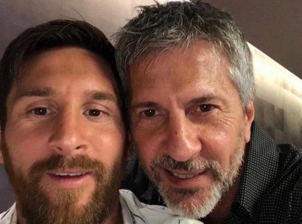
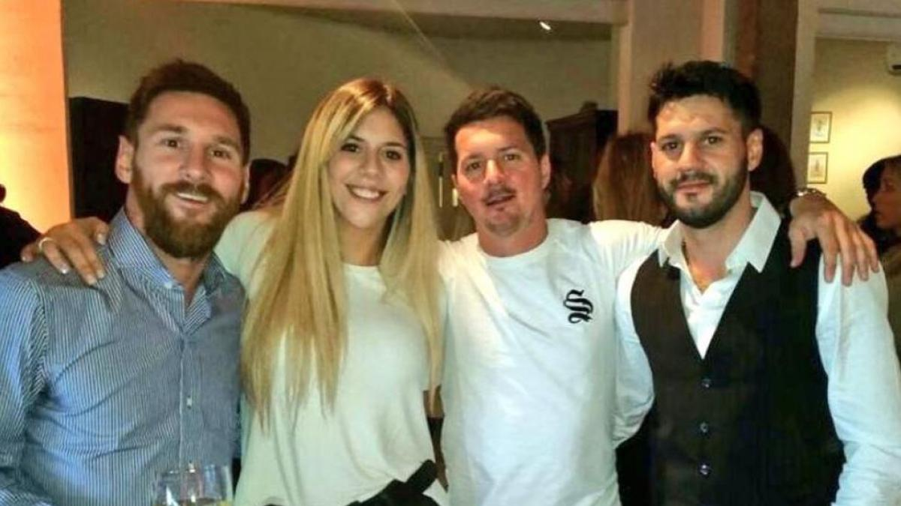

La Madre de Messi
Celia María Cuccittini, madre de Lionel Messi, ha sido un pilar fundamental en la vida de Messi, apoyándolo desde sus primeros días en el fútbol hasta su éxito profesional. Ha acompañado a Messi en su carrera y es una presencia constante en su vida.
El Padre de Messi (Representante)
Jorge Messi, el padre de Lionel, ha sido su representante y ha jugado un papel importante en la gestión de su carrera desde sus inicios. Como asesor y guía, Jorge ha tomado decisiones clave que han llevado a Lionel al éxito mundial.
Los Hermanos de Messi
Lionel tiene tres hermanos: Rodrigo, Matías y María Sol. Han sido una gran fuente de apoyo y han crecido juntos en Rosario. Cada uno de ellos sigue de cerca la carrera de Messi y son muy unidos, compartiendo los logros y momentos personales.
